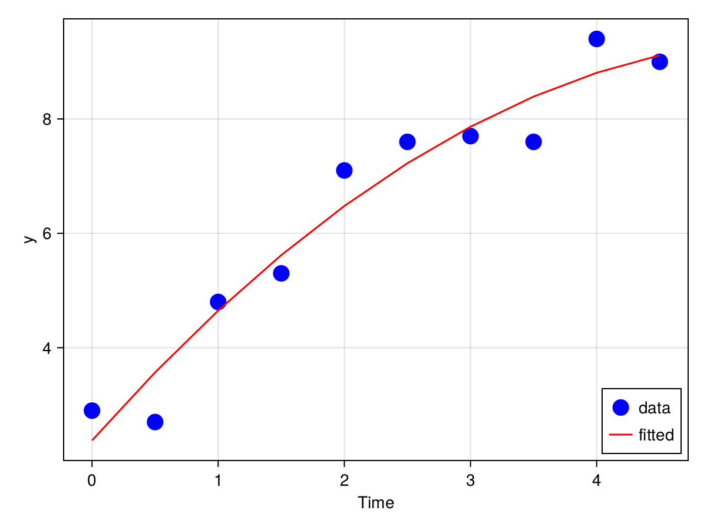
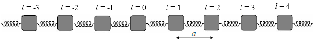
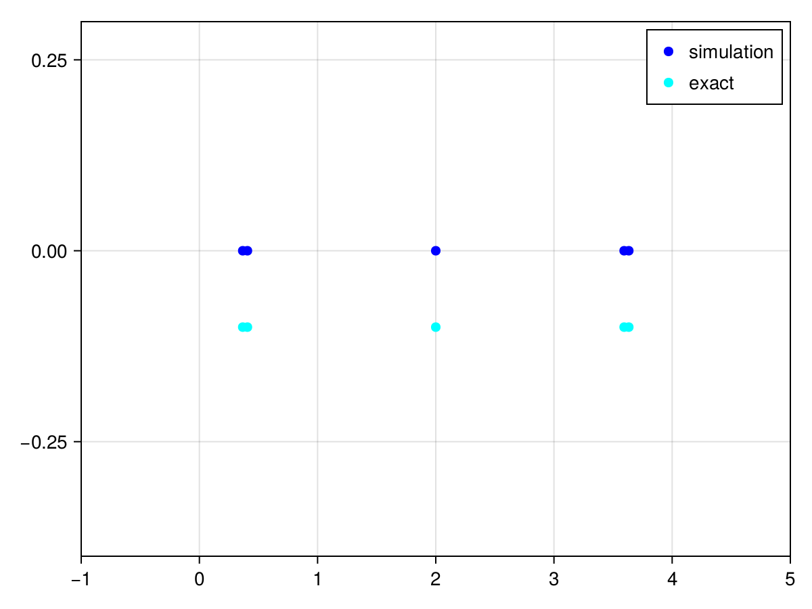

Matrix Computation
Matrix multiplication
Matrix multiplication is a fundamental operation in linear algebra. Given two matrices $A\in \mathbb{C}^{m\times n}$ and $B\in \mathbb{C}^{n\times p}$, the product $C = AB$ is defined as
\[C_{ij} = \sum_{k=1}^n A_{ik}B_{kj}.\]
The time complexity of matrix multiplication is $O(mnp)$.
System of Linear Equations and LU Decomposition
Let $A\in \mathbb{C}^{n\times n}$ be a invertible square matrix and $b \in \mathbb{C}^n$ be a vector. Solving a linear equation means finding a vector $x\in\mathbb{C}^n$ such that
\[A x = b\]
Let us consider the following system of linear equations
\[\begin{align*} 2 x_1 + 3 x_2 - 2 x_3 &= 1, \\ 3 x_1 + 2 x_2 + 3 x_3 &= 2, \\ 4 x_1 - 3 x_2 + 2 x_3 &= 3. \end{align*}\]
The system of linear equations can be written in matrix form as
\[\begin{bmatrix} 2 & 3 & -2 \\ 3 & 2 & 3 \\ 4 & -3 & 2 \end{bmatrix} \begin{bmatrix} x_1 \\ x_2 \\ x_3 \end{bmatrix} = \begin{bmatrix} 1 \\ 2 \\ 3 \end{bmatrix}.\]
In Julia, we can solve the system of linear equations using the backslash operator \ function.
julia> A = [2 3 -2; 3 2 3; 4 -3 2]3×3 Matrix{Int64}: 2 3 -2 3 2 3 4 -3 2julia> b = [1, 2, 3]3-element Vector{Int64}: 1 2 3julia> x = A \ b3-element Vector{Float64}: 0.6666666666666666 -0.07692307692307693 0.05128205128205128julia> A * x3-element Vector{Float64}: 0.9999999999999999 2.0 3.0
The \ method is implemented with the LU decomposition. It is equivalent to the following code.
julia> using LinearAlgebrajulia> lures = lu(A) # pivot rows by defaultLinearAlgebra.LU{Float64, Matrix{Float64}, Vector{Int64}} L factor: 3×3 Matrix{Float64}: 1.0 0.0 0.0 0.5 1.0 0.0 0.75 0.944444 1.0 U factor: 3×3 Matrix{Float64}: 4.0 -3.0 2.0 0.0 4.5 -3.0 0.0 0.0 4.33333julia> lures.L * lures.U ≈ lures.P * Atruejulia> UpperTriangular(lures.U) \ (LowerTriangular(lures.L) \ (lures.P * b))3-element Vector{Float64}: 0.6666666666666666 -0.07692307692307693 0.05128205128205128
The LU decomposition of a matrix $A\in \mathbb{C}^{n\times n}$ is a factorization of the form
\[PA = LU\]
where $P$ is a permutation matrix for pivoting the rows of $A$, $L$ is a lower triangular matrix, and $U$ is an upper triangular matrix. Pivoting rows are used to avoid division by zero to ensure numerical stability. In Julia, linear equations with UpperTriangular or LowerTriangular matrices will be solved with forward and backward substitution.
To summarize, the algorithm to solve a linear equation contains following steps:
Decompose the matrix $PA \in \mathbb{C}^{n\times n}$ into $L \in \mathbb{C}^{n\times n}$ and $U \in \mathbb{C}^{n\times n}$ matrices using a method such as Gaussian elimination or Crout's method.
Rewrite the equation $Ax = b$ as $LUx = Pb$.
Solve for y in $Ly = b$ by Forward-substitution. This involves substituting the values of $y$ into the equation one at a time, starting with the first row and working downwards.
Solve for $x$ in $Ux = y$ by Back-substitution (link TBA). This involves substituting the values of $x$ into the equation one at a time, starting with the last row and working upwards.
Least Squares Problem and QR Decomposition
The least squares problem is to find a vector $x\in\mathbb{C}^n$ that minimizes the residual
\[\|Ax - b\|_2\]
where $A\in \mathbb{C}^{m\times n}$ and $b\in \mathbb{C}^m$. A solution to the least squares problem involves finding the QR decomposition of the matrix $A$. The QR decomposition of $A$ is a factorization of the form
\[A = QR\]
where $Q\in \mathbb{C}^{m\times m}$ is an orthogonal matrix and $R\in \mathbb{C}^{m\times n}$ is an upper triangular matrix. The QR decomposition is used to solve the linear least squares problem and to find the eigenvalues of a matrix.
In Julia, we can find the QR decomposition of a matrix using the qr function.
julia> A = [1 2; 3 4; 5 6]3×2 Matrix{Int64}: 1 2 3 4 5 6julia> qr(A)LinearAlgebra.QRCompactWY{Float64, Matrix{Float64}, Matrix{Float64}} Q factor: 3×3 LinearAlgebra.QRCompactWYQ{Float64, Matrix{Float64}, Matrix{Float64}} R factor: 2×2 Matrix{Float64}: -5.91608 -7.43736 0.0 0.828079
Suppose we have a set of data points
| $t_i$ | 0.0 | 0.5 | 1.0 | 1.5 | 2.0 | 2.5 | 3.0 | 3.5 | 4.0 | 4.5 |
|---|---|---|---|---|---|---|---|---|---|---|
| $y_i$ | 2.9 | 2.7 | 4.8 | 5.3 | 7.1 | 7.6 | 7.7 | 7.6 | 9.4 | 9.0 |
We can fit a quadratic function of the form $y = c_0 + c_1 t + c_2 t^2$ to the data by solving the least squares problem. We can solve the least squares problem by finding the values of $c_0$, $c_1$, and $c_2$ that minimize the sum of the squared residuals
\[\sum_{i=1}^n (y_i - (c_0 + c_1 t_i + c_2 t_i^2))^2.\]
In matrix form, the least squares problem can be written as
\[\min_x \|Ax - b\|_2\]
where
\[A = \begin{bmatrix} 1 & t_1 & t_1^2 \\ 1 & t_2 & t_2^2 \\ \vdots & \vdots & \vdots \\ 1 & t_n & t_n^2 \end{bmatrix}, x = \begin{bmatrix} c_0 \\ c_1 \\ c_2 \end{bmatrix}, b = \begin{bmatrix} y_1 \\ y_2 \\ \vdots \\ y_n \end{bmatrix}.\]
By expanding the expression $\|Ax - b\|_2$, we can see that the solution to the least squares problem is given by
\[x = (A^\dagger A)^{-1} A^\dagger b\]
when $A^\dagger A$ is invertible, where $A^\dagger$ is the Hermitian conjugate of $A$, which is the same as transpose given $A$ is real.
julia> using LinearAlgebrajulia> time = [0.0, 0.5, 1.0, 1.5, 2.0, 2.5, 3.0, 3.5, 4.0, 4.5];julia> y = [2.9, 2.7, 4.8, 5.3, 7.1, 7.6, 7.7, 7.6, 9.4, 9.0];julia> A = hcat(ones(length(time)), time, time.^2)10×3 Matrix{Float64}: 1.0 0.0 0.0 1.0 0.5 0.25 1.0 1.0 1.0 1.0 1.5 2.25 1.0 2.0 4.0 1.0 2.5 6.25 1.0 3.0 9.0 1.0 3.5 12.25 1.0 4.0 16.0 1.0 4.5 20.25julia> x = (A' * A) \ (A' * y)3-element Vector{Float64}: 2.378181818181825 2.4924242424242355 -0.22121212121212
The fitted quadratic function is as follows.
However, this approach is not recommended for large matrices due to the poor numerical stability. The condition number of $A^\dagger A$ is the square of the condition number of $A$, which can be very large. Instead, we can use the qr function to solve the least squares problem.
julia> Q, R = qr(A)LinearAlgebra.QRCompactWY{Float64, Matrix{Float64}, Matrix{Float64}} Q factor: 10×10 LinearAlgebra.QRCompactWYQ{Float64, Matrix{Float64}, Matrix{Float64}} R factor: 3×3 Matrix{Float64}: -3.16228 -7.11512 -22.5312 0.0 4.54148 20.4366 0.0 0.0 5.74456julia> x = R \ (Matrix(Q)' * y)3-element Vector{Float64}: 2.378181818181821 2.4924242424242427 -0.22121212121212142
An alternative way is to use the pseudoinverse of $A$, which invokes the more costly SVD decomposition.
julia> LinearAlgebra.pinv(A) * (y) # an alternative way3-element Vector{Float64}: 2.37818181818182 2.492424242424241 -0.22121212121212186
Eigenvalues and Eigenvectors
The eigenvalues and eigenvectors of a matrix $A\in \mathbb{C}^{n\times n}$ are the solutions to the equation
\[A x = \lambda x\]
where $\lambda$ is a scalar and $x$ is a non-zero vector. The eigenvalues of a matrix can be found by solving the characteristic equation
\[\det(A - \lambda I) = 0\]
where $I$ is the identity matrix. The eigenvectors can be found by solving the equation $(A - \lambda I)x = 0$.
In Julia, we can find the eigenvalues and eigenvectors of a matrix using the eigen function.
julia> A = [1 2; 3 4]2×2 Matrix{Int64}: 1 2 3 4julia> eigen(A)LinearAlgebra.Eigen{Float64, Float64, Matrix{Float64}, Vector{Float64}} values: 2-element Vector{Float64}: -0.3722813232690143 5.372281323269014 vectors: 2×2 Matrix{Float64}: -0.824565 -0.415974 0.565767 -0.909377
This example is about solving the dynamics of a vibrating string. 
Image source and main reference
The dynamics of a one dimensional vibrating string can be described by the Newton's second law
\[M \ddot{u} = C(u_{i+1} - u_i) - C(u_i - u_{i-1})\]
where $M$ is the mass matrix, $C$ is the stiffness, and $u_i$ is the displacement of the $i$th atom. The end atoms are fixed, so we have $u_0 = u_{n+1} = 0$. We assume all atoms have the same eigenfrequency $\omega$ and the displacement of the $i$th atom is given by
\[u_i(t) = A_i \cos(\omega t + \phi_i)\]
where $\phi_i$ is the phase of the $i$th atom. Then we transform the equation into the eigenvalue problem
\[\begin{bmatrix} -C & C & 0 & \cdots & 0 \\ C & -2C & C & \cdots & 0 \\ 0 & C & -2C & \cdots & 0 \\ \vdots & \vdots & \vdots & \ddots & \vdots \\ 0 & 0 & 0 & \cdots & -C \end{bmatrix} \begin{bmatrix} A_1 \\ A_2 \\ A_3 \\ \vdots \\ A_n \end{bmatrix} = -\omega^2M \begin{bmatrix} A_1 \\ A_2 \\ A_3 \\ \vdots \\ A_n \end{bmatrix}\]
The eigenvalues $\omega^2$ are the eigenfrequencies of the vibrating string and the eigenvectors are the eigenmodes of the vibrating string.
Let us consider a 5-atom vibrating string with $M = C = 1.0$. We can find the eigenvalues and eigenvectors of the mass matrix using the eigen function.
julia> M = C = 1.01.0julia> C_matrix = [-C C 0 0 0; C -2C C 0 0; 0 C -2C C 0; 0 0 C -2C C; 0 0 0 C -C]5×5 Matrix{Float64}: -1.0 1.0 0.0 0.0 0.0 1.0 -2.0 1.0 0.0 0.0 0.0 1.0 -2.0 1.0 0.0 0.0 0.0 1.0 -2.0 1.0 0.0 0.0 0.0 1.0 -1.0julia> evals, evecs = LinearAlgebra.eigen(C_matrix);julia> second_omega = sqrt(-evals[2]/M)1.618033988749894julia> second_mode = evecs[:, 2]5-element Vector{Float64}: 0.37174803446018484 -0.6015009550075462 1.4023804401251382e-15 0.601500955007545 -0.3717480344601845julia> u(t) = second_mode .* cos.(-second_omega .* t) # (ϕi=0)u (generic function with 1 method)julia> u(1.0) # atom locations offsets at t=1.05-element Vector{Float64}: -0.017553977969578697 0.028402932992545194 -6.622053936793937e-17 -0.028402932992545135 0.01755397796957868
By comparing the eigenmodes with the simulation, we can see that the second mode matches the simulation.
For any given initial condition, the displacement of the atoms can be expressed as a linear combination of the eigenmodes. To find a more generic implementation, please check the source code.
Matrix functions
Suppose we have a matrix $A \in \mathbb{C}^{n\times n}$ and an analytic function $f$ defined with a power series
\[f(A) = \sum_{i=0}^\infty a_i A^i.\]
To compute a matrix function, e.g. $f(A) = e^A$, we can use the following steps:
- Diagonalize the matrix $A$ as $A = PDP^{-1}$, where $D$ is a diagonal matrix and $P$ is a matrix whose columns are the eigenvectors of $A$.
- Compute the matrix function $f(A)$ as $f(A) = Pf(D)P^{-1}$.
- Compute the matrix function $f(D)$ by applying the function $f$ to the diagonal elements of $D$.
- Compute the matrix function $f(A)$ by multiplying the matrices $P$, $f(D)$, and $P^{-1}$, i.e. $f(A) = P f(D) P^{-1}$.
Let us consider the matrix
\[A = \begin{bmatrix} 1 & 2 \\ 3 & 4 \end{bmatrix}\]
We can compute the matrix function $e^A$ using the exp function.
julia> A = [1 2; 3 4]2×2 Matrix{Int64}: 1 2 3 4julia> exp(A)2×2 Matrix{Float64}: 51.969 74.7366 112.105 164.074
It is consistent with the result from the eigenvalue decomposition.
julia> D, P = LinearAlgebra.eigen(A)LinearAlgebra.Eigen{Float64, Float64, Matrix{Float64}, Vector{Float64}} values: 2-element Vector{Float64}: -0.3722813232690143 5.372281323269014 vectors: 2×2 Matrix{Float64}: -0.824565 -0.415974 0.565767 -0.909377julia> P * LinearAlgebra.Diagonal(exp.(D)) * inv(P)2×2 Matrix{Float64}: 51.969 74.7366 112.105 164.074
Singular Value Decomposition
The singular value decomposition (SVD) of a matrix $A\in \mathbb{C}^{m\times n}$ is a factorization of the form
\[A = U \Sigma V^\dagger\]
where $U\in \mathbb{C}^{m\times m}$ and $V\in \mathbb{C}^{n\times n}$ are orthogonal matrices and $\Sigma\in \mathbb{C}^{m\times n}$ is a diagonal matrix with non-negative real numbers on the diagonal. The singular value decomposition is a generalization of the eigenvalue decomposition for non-square matrices.
In Julia, we can find the singular value decomposition of a matrix using the svd function.
julia> A = [1 2; 3 4; 5 6]3×2 Matrix{Int64}: 1 2 3 4 5 6julia> svd(A)LinearAlgebra.SVD{Float64, Float64, Matrix{Float64}, Vector{Float64}} U factor: 3×2 Matrix{Float64}: -0.229848 0.883461 -0.524745 0.240782 -0.819642 -0.401896 singular values: 2-element Vector{Float64}: 9.525518091565107 0.5143005806586443 Vt factor: 2×2 Matrix{Float64}: -0.619629 -0.784894 -0.784894 0.619629
Cholesky Decomposition
The Cholesky decomposition of a positive definite matrix $A\in \mathbb{C}^{n\times n}$ is a factorization of the form
\[A = LL^\dagger\]
where $L\in \mathbb{C}^{n\times n}$ is a lower triangular matrix. The Cholesky decomposition is used to solve the linear system of equations $Ax = b$ when $A$ is symmetric and positive definite.
In Julia, we can find the Cholesky decomposition of a matrix using the cholesky function.
julia> A = [2 1; 1 3]2×2 Matrix{Int64}: 2 1 1 3julia> cholesky(A)LinearAlgebra.Cholesky{Float64, Matrix{Float64}} U factor: 2×2 LinearAlgebra.UpperTriangular{Float64, Matrix{Float64}}: 1.41421 0.707107 ⋅ 1.58114